버전 3.0 — 최신 빌드 기준
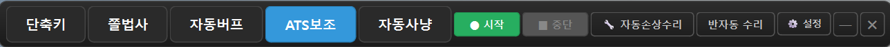
1. USB 장치를 컴퓨터에 연결합니다.
2. Archon_Setup.exe 파일을 실행합니다.
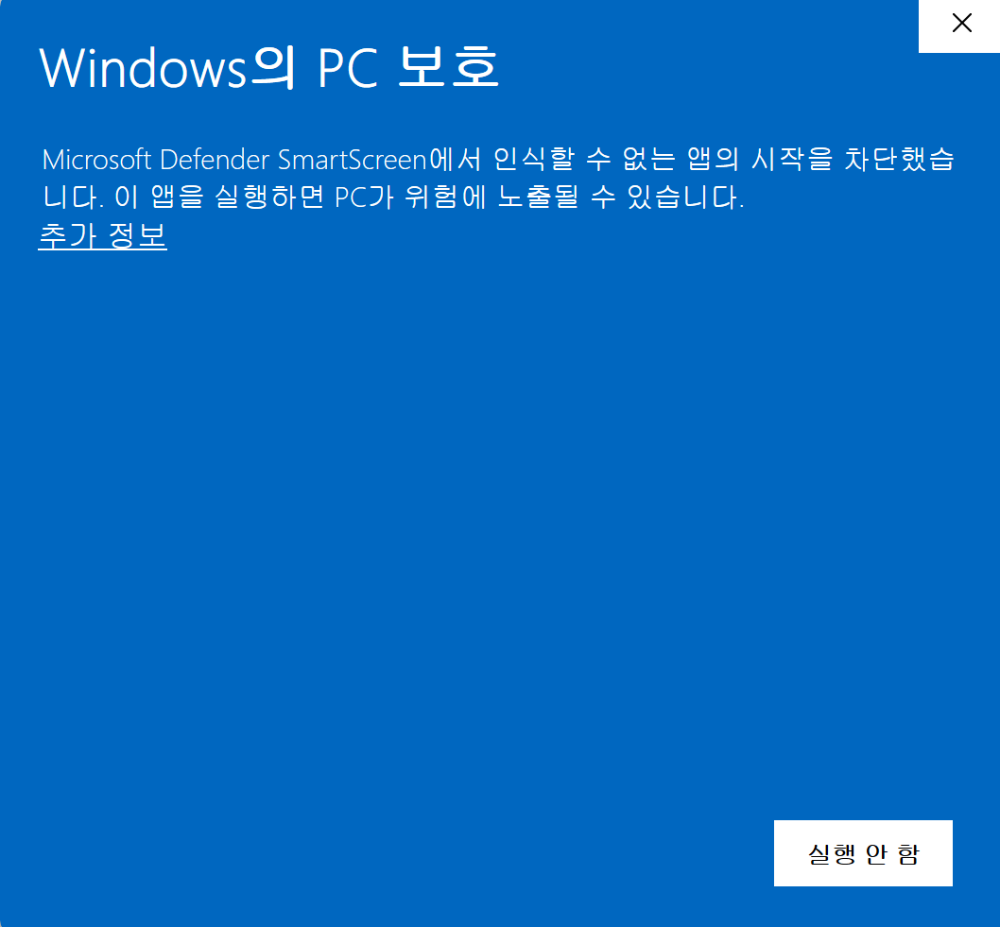
3. 설치 마법사의 안내에 따라 설치 완료.
4. 바탕화면 Archon Macro 아이콘 실행.
프로그램 첫 실행 시 로그인이 필요합니다. 관리자 승인된 계정만 사용할 수 있습니다.
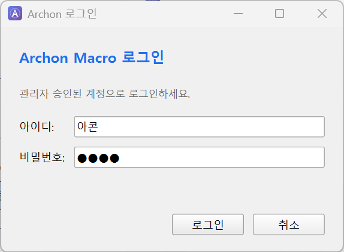
• 5분 내 로그인 10회 실패 시 5분 잠금이 걸립니다 (남은 시간이 카운트다운으로 표시).
• 로그인 ID는 기억 기능이 있어 다음 실행 시 자동으로 채워집니다.
• 승인 상태는 5분마다 자동 재확인되며, 차단 시 즉시 반영됩니다.
로그인 성공 시 상태바가 화면 상단에 나타납니다. 기능별로 탭이 구분되며 한 번에 한 탭만 활성화됩니다.
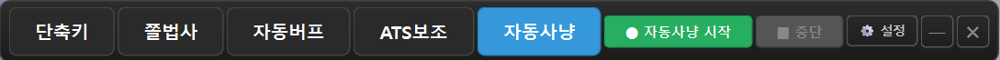
| 탭 | 기능 |
|---|---|
| 단축키 | 키보드/마우스 단축키로 매크로 슬롯 발동 (가장 기본) |
| 쫄법사 | 마우스 좌클릭 자동 반복 + 자동힐 / 자동귀환 |
| 자동버프 | 화면 텍스트 인식 → 거래/파티 자동 클릭 + 키순서 발동, 마나 부족 시 타이핑 |
| ATS보조 | HP/MP 실시간 감지 + 자동손상수리 / 반자동수리 |
| 자동사냥 | AI 기반 몬스터 인식 + 자동 드래그 공격 + 버프 검사 + HP/타이머/차단이미지 |
가장 기본 매크로 기능. 설정창에서 등록한 슬롯을 단축키로 발동합니다.
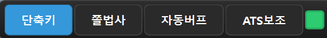
단축키 탭의 ⚙ 설정 버튼 클릭.
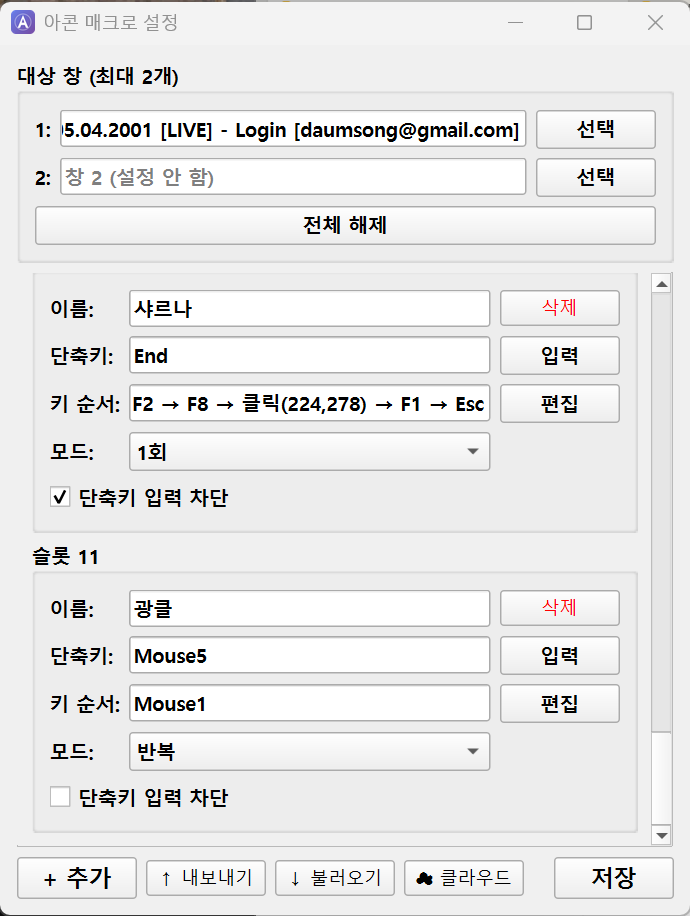
| 항목 | 설명 |
|---|---|
| 이름 | 상태바에 표시될 매크로 이름 |
| 단축키 | [입력] 클릭 후 0.5초 내 원하는 키 입력. 키보드/마우스/조합키(Ctrl+1 등) 모두 지원 |
| 키 순서 | [편집]으로 키 순서 편집기 진입 |
| 모드 | 1회 / 반복 / 홀드 중 선택 |
| 단축키 입력 차단 | 체크 시 단축키가 게임에 전달되지 않음 (매크로만 발동) |
설정창 하단의 버튼들로 설정을 백업/복원할 수 있습니다. 클라우드 설정 참고.
쫄 캐릭터용 자동 좌클릭 + 자동힐 / 자동귀환.
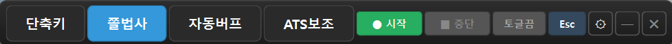
쫄법사 탭의 ⚙ 설정으로 진입 — 단축키 탭과 완전히 독립된 슬롯입니다.
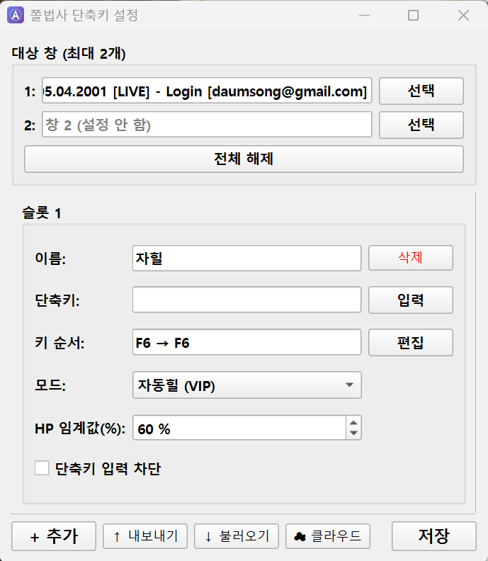
게임 화면을 자동 모니터링해 "아이템 거래를"(거래 요청) 또는 "승낙하시"(파티 초대) 텍스트를 인식하면 미리 설정한 좌표를 클릭하고 키순서를 발동합니다. 두 게임창을 동시에 처리할 수 있습니다.
각 창 이름 버튼을 클릭하면 창별 상세 설정 다이얼로그가 열립니다.
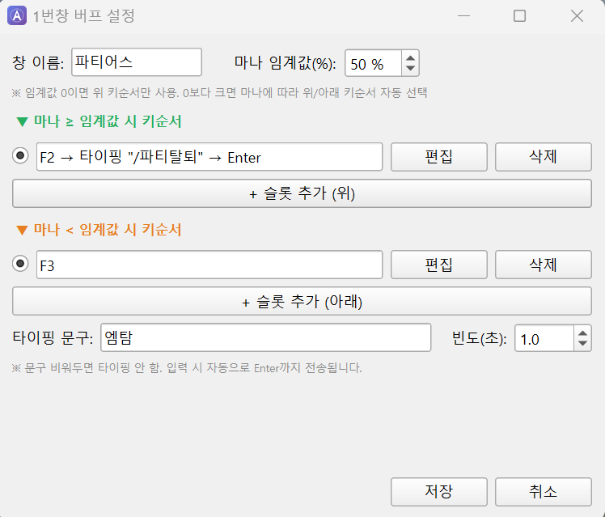
| 항목 | 설명 |
|---|---|
| 창 이름 | 구분용 이름 (예: 파티어스) |
| 마나 임계값(%) | 0이면 위 키순서만 사용. 0보다 크면 마나에 따라 위/아래 자동 분기 |
| 마나 ≥ 임계값 시 키순서 | 마나 충분 시 발동할 키순서 (다중 슬롯 + 라디오 선택) |
| 마나 < 임계값 시 키순서 | 마나 부족 시 키순서 (예: 회복 동작) |
| 타이핑 문구 | 마나 부족 상태에서 자동 외칠 문구 (예: /파티탈퇴, 마나포션 구해요)비워두면 타이핑 안 함. 입력 시 자동으로 Enter까지 전송됨. |
| 빈도(초) | 타이핑 반복 간격 (예: 5.0초마다 1번) |
탭의 🎯 인식영역 버튼으로 다이얼로그 진입.
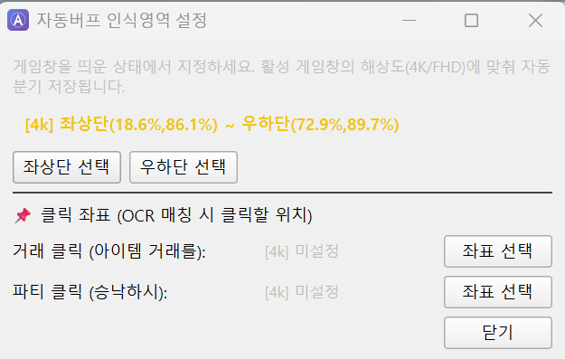
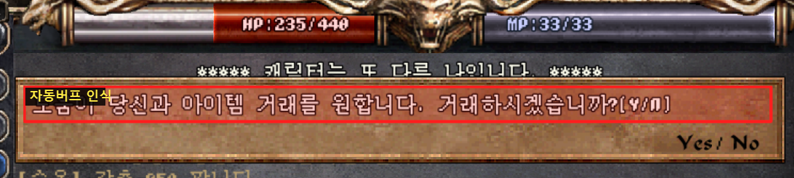
HP/MP 실시간 모니터링 + 자동손상수리 + 반자동수리 통합.
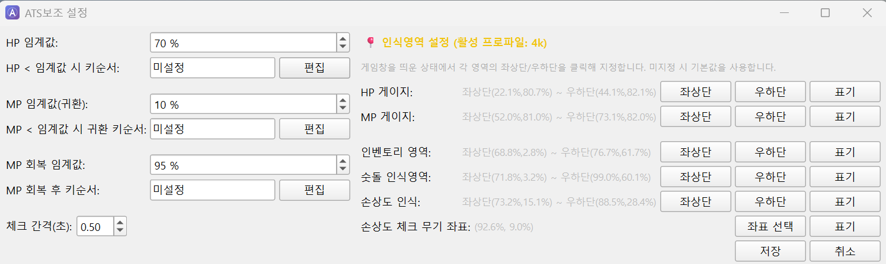
| 항목 | 설명 |
|---|---|
| HP 임계값(%) | HP가 이 값 미만이면 힐 키순서 발동 (단, MP가 MP 임계값 이상일 때만) |
| HP < 임계값 시 키순서 | 예: F6 (힐 스킬) |
| MP 임계값(귀환) | MP가 이 값 미만이면 즉시 귀환 시퀀스 (최우선) |
| MP < 임계값 시 귀환 키순서 | 예: 귀환 스크롤 |
| MP 회복 임계값 | 귀환 후 MP가 이 값 이상이면 복귀 키순서 발동 |
| MP 회복 후 키순서 | 다시 사냥터로 가는 동작 (텔레포트 등) |
| 체크 간격(초) | HP/MP 검사 주기 (기본 0.50) |
장비 내구도가 떨어지면 자동으로 인벤 열고 숫돌 위치 찾아서 무기에 사용. 5초마다 화면을 검사합니다.
버튼을 누른 시점에 1회만 손상 검사 + 수리 진행 (자동 반복 없음).
화면을 실시간 캡처해서 자체 학습된 AI 모델로 몬스터를 감지하고 자동으로 드래그 공격합니다. 가까운 몹에 락온해서 한 마리씩 정리하며, 버프/HP/타이머/일시정지 이미지까지 통합 관리.
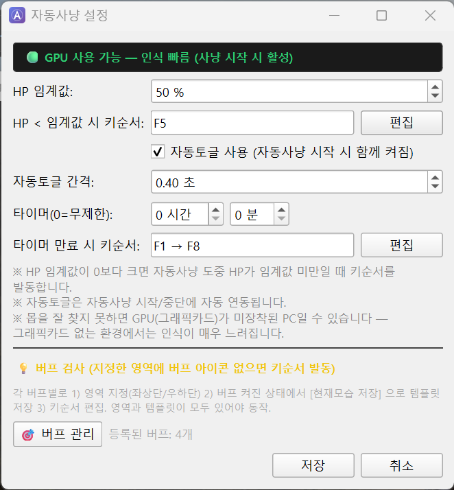
| 항목 | 설명 |
|---|---|
| GPU 상태 표시 | 🟢 GPU 사용 가능 — 인식 빠름 / 🔴 CPU만 사용 가능 — 인식 느림 (그래픽카드 미장착 PC). 시작 시 자동 체크. |
| HP 임계값(%) | 0보다 크면 자동사냥 도중 HP가 임계값 미만일 때 키순서 발동 (드래그는 유지) |
| HP < 임계값 시 키순서 | 회복 키순서 (예: F5) |
| 자동토글 사용 | 자동사냥 시작/중단에 함께 켜짐. 0.4초 간격으로 F4 자동 입력 (공격 키) |
| 자동토글 간격 | F4 반복 간격 (기본 0.40초) |
| 타이머(시/분) | 설정 시간 경과하면 자동사냥 자동 종료. 0/0이면 무제한. |
| 타이머 만료 시 키순서 | 타이머 종료 직전 발동할 키순서 (귀환 등) |
설정창의 🎯 버프 관리 버튼으로 진입.
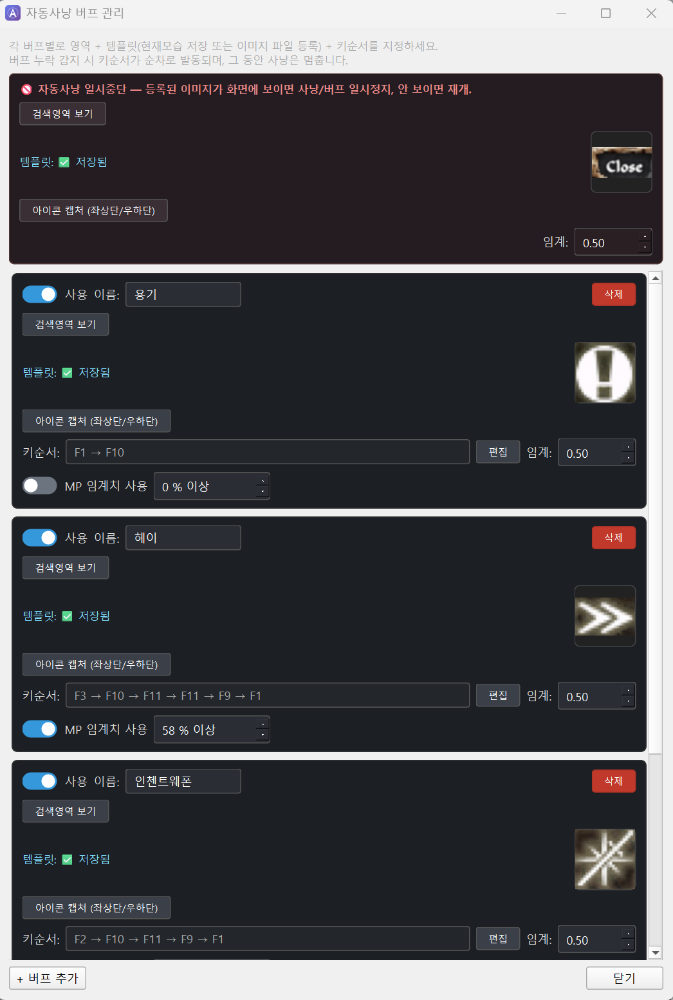
등록한 이미지가 게임 화면에 보이면 자동사냥과 버프가 모두 일시정지됩니다. 안 보이면 자동 재개. 검색 영역은 게임창 우상단(인벤토리/창 영역)으로 고정되어 있고, 사용자는 아이콘 캡처만 하면 됩니다.
| 항목 | 설명 |
|---|---|
| 사용 토글 | 해당 버프 발동 ON/OFF (기본 ON) |
| 이름 | 구분용. 일부 이름(예: 헤이)은 입력 시 검색영역이 자동으로 프리셋 좌표로 잡힙니다. |
| 검색영역 보기 | 현재 검색 영역을 게임창에 빨간 박스로 3초간 표시 |
| 아이콘 캡처 | 좌상단 → 우하단 클릭으로 버프 아이콘 영역을 캡처해 템플릿 저장. 우측에 썸네일 표시. |
| 키순서 | 해당 버프가 사라졌을 때 발동할 키순서 |
| 임계 | 이미지 매칭 임계값 (기본 0.50) |
| MP 임계치 사용 토글 | ON 시 MP가 지정 % 이상일 때만 버프 발동 (마나 부족 시 스킵) |
ATS 설정창에서 인식영역과 클릭 좌표를 지정합니다 (해상도 4K/FHD 자동 분기 저장). 자동사냥의 차단 이미지/버프 영역은 비율 고정 — 캡처만 하면 됩니다.
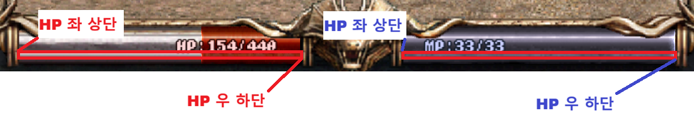
좌상단: HP/MP 막대 시작점 (좌측 끝)
우하단: HP/MP 막대 끝점 (우측 끝)
※ 게이지가 100% 채워졌을 때 기준으로 막대 영역을 정확히 감싸야 합니다. 너무 좁으면 측정이 부정확합니다.
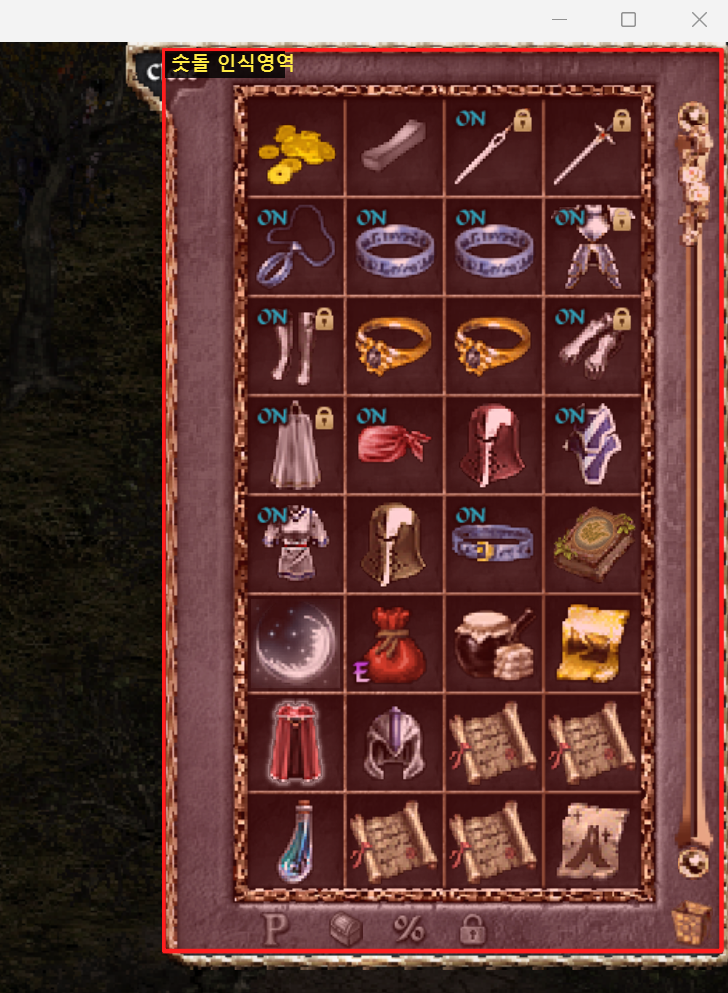
자동손상수리가 동작할 때 검사하는 인벤토리 전체 영역을 감쌉니다. 인벤 창이 떠 있을 때 모든 슬롯이 들어가도록 넓게 지정하세요.
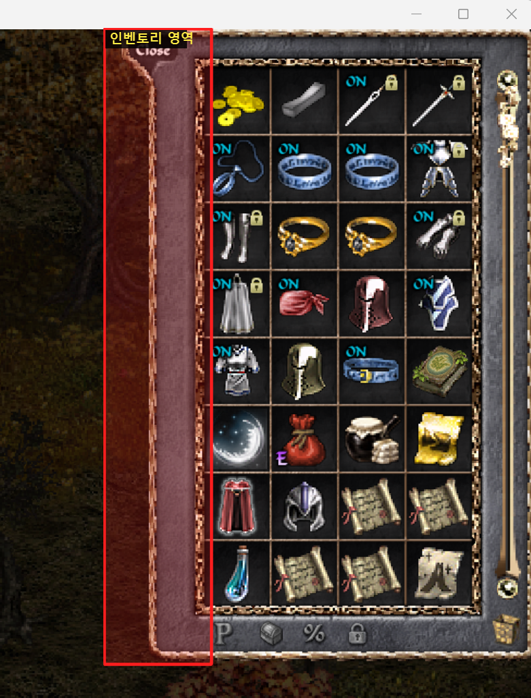
인벤토리에서 숫돌(망치)이 위치한 슬롯 영역. 숫돌이 어느 칸에 있을지 모르므로 충분히 넓게 지정하세요.
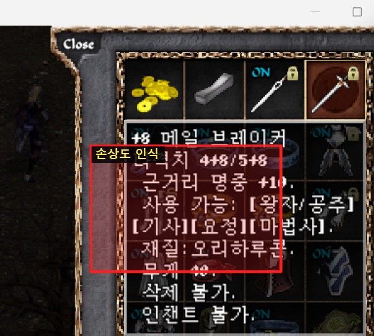
손상도 인식 (좌상단/우하단): 무기 정보창에서 손상도 텍스트 표시 영역.
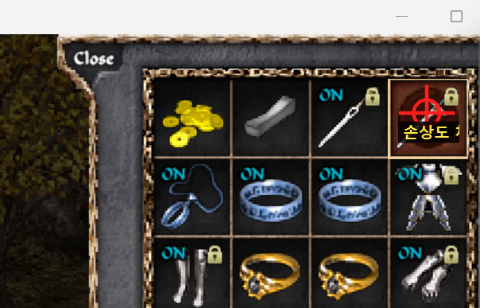
손상도 체크 무기 좌표 (좌표 선택): 인벤에서 검사/수리할 무기 한 점을 클릭. 매크로가 이 위치를 우클릭하여 손상도 정보창을 띄웁니다.
인식영역 (좌상단/우하단): 거래 요청 / 파티 초대 다이얼로그가 뜨는 영역. 텍스트만 잘 보이면 충분히 좁게.
거래 클릭: "아이템 거래를" 매칭 시 클릭할 [수락] 버튼.
파티 클릭: "승낙하시" 매칭 시 클릭할 [수락] 버튼.
슬롯의 [편집] 버튼으로 진입.
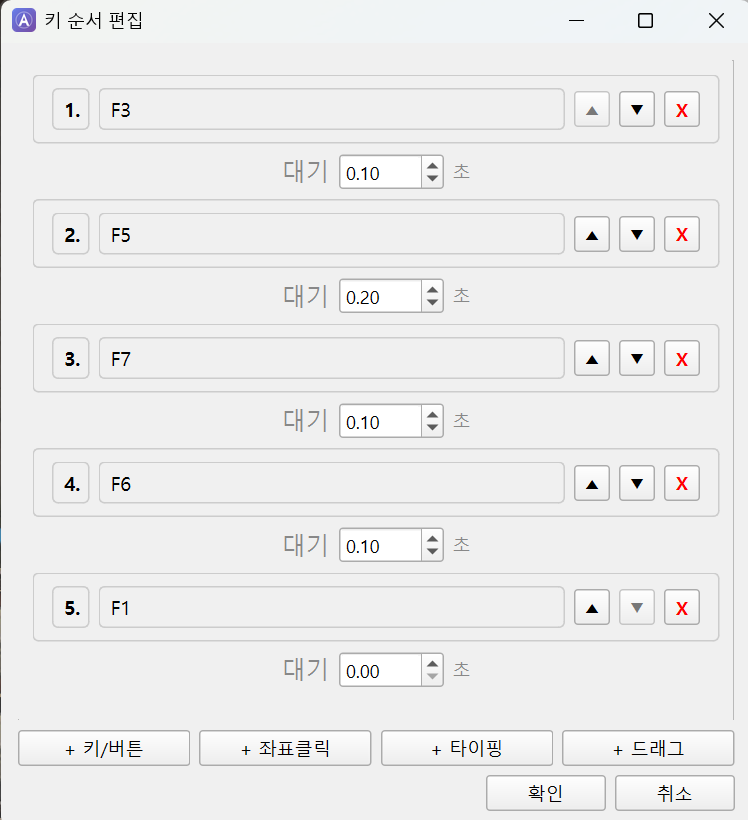
각 동작은 번호와 함께 세로로 나열되며, ▲▼ 순서 변경 / X 삭제 / 클릭으로 수정 가능합니다. 동작 사이에 대기 시간(초) 설정 가능.
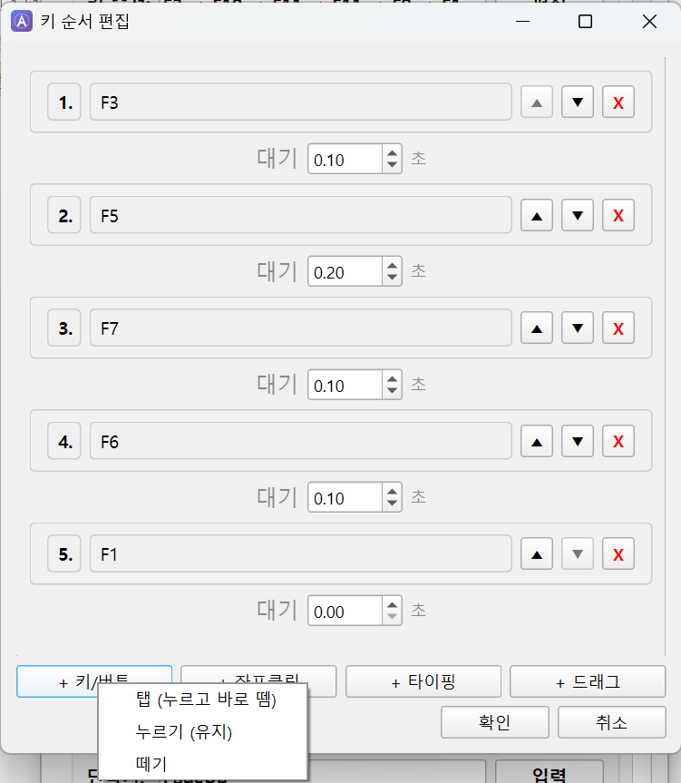
• 탭: 키 입력 후 즉시 뗌 (일반)
• 누르기 (유지): 키 누른 상태 유지 (예: Shift)
• 떼기: 누르고 있던 키 떼기
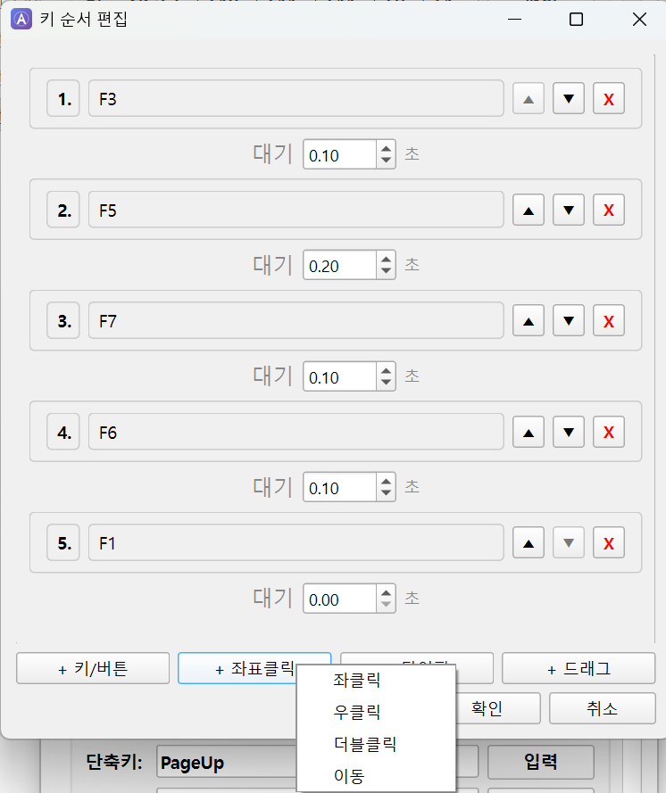
좌클릭 / 우클릭 / 더블클릭 / 이동 — 반투명 화면에서 클릭으로 좌표 캡처 (Shift/Ctrl/Alt 조합 가능).
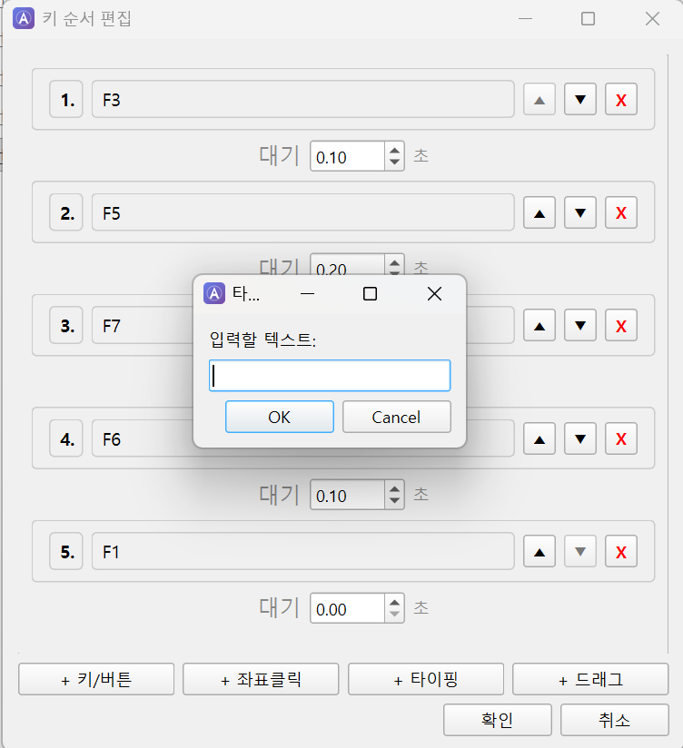
한글/영문/숫자 모두 지원. 한글 입력 시 PC 입력 모드가 한글이어야 합니다.
시작점 클릭 → 끝점 클릭 → 이동 시간(초) 입력.
설정창 하단의 ☁ 클라우드 버튼으로 진입. 본인 ID/비밀번호로 DB에 설정을 저장하고 다른 PC에서도 동일한 설정을 불러올 수 있습니다.
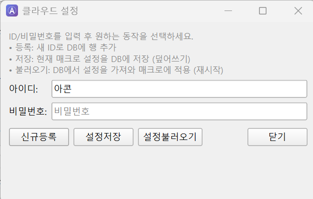
| 버튼 | 동작 |
|---|---|
| 신규등록 | 새 ID로 DB에 행 추가 |
| 설정저장 | 현재 매크로 설정을 DB에 저장 (덮어쓰기) |
| 설정불러오기 | DB에서 설정을 가져와 매크로에 적용 (재시작) |
• 설정 변경 후 반드시 '저장' 버튼을 눌러야 적용됩니다.
• 환경마다 해상도/UI가 다르므로 모든 좌표는 직접 지정이 필요합니다. 미지정 시 기본값(4K/FHD 프로파일)이 사용됩니다.
• 자동버프는 대상 창이 화면에 표시되어야 동작합니다 (가려져 있으면 자동으로 앞으로 가져옵니다).
• ATS보조는 1번창에서만 동작합니다.
• 자동버프는 1번/2번 두 창을 모두 처리합니다.
• 한 창 처리 완료 → 다음 창 순서로 순차 처리됩니다 (동시 처리 X).
• HP/MP 게이지가 가려지거나 UI가 변경되면 감지가 부정확해질 수 있습니다.
• ESC를 3초 이상 누르면 전체 매크로(단축키 탭)가 비활성화됩니다.
• Insert 키로 자동사냥을 ON/OFF 토글할 수 있습니다.
• 탭 전환 시 다른 탭의 동작이 자동 중단됩니다 (한 번에 한 탭).
• USB 장치가 연결되어 있어야 키 입력이 게임에 전달됩니다.
• 한글 타이핑 시 PC 입력 모드가 한글이어야 합니다.
• 타이핑 실행 중에는 다른 모든 매크로가 자동 일시정지됩니다.
• 5분 내 로그인 10회 실패 시 5분 잠금이 걸립니다.
Mouse4 → F4를 0.2초 간격으로 반복 입력.
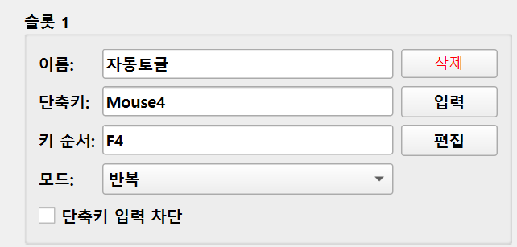
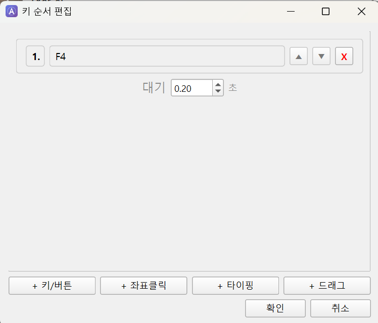
Mouse5 → F5 누름 유지. 다시 누르면 뗌.
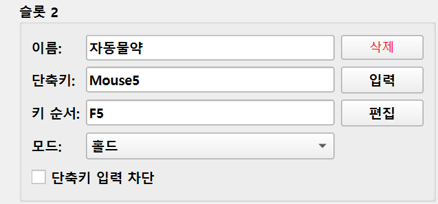
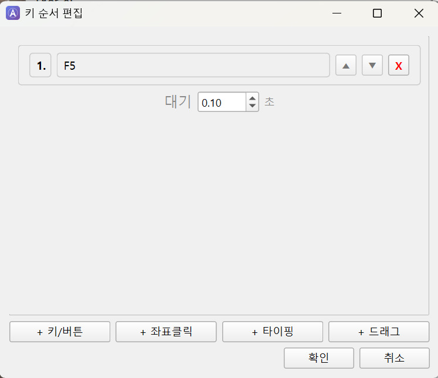
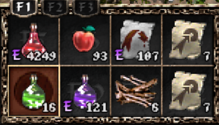
Right(→) → F2→F10→F12→F12→F9→F1 1회 실행.
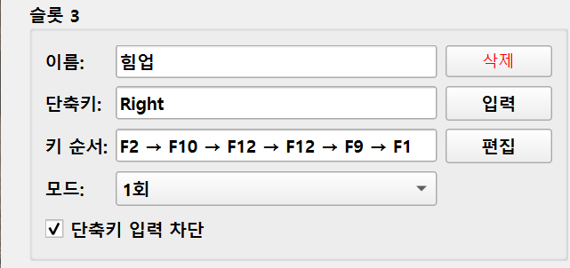
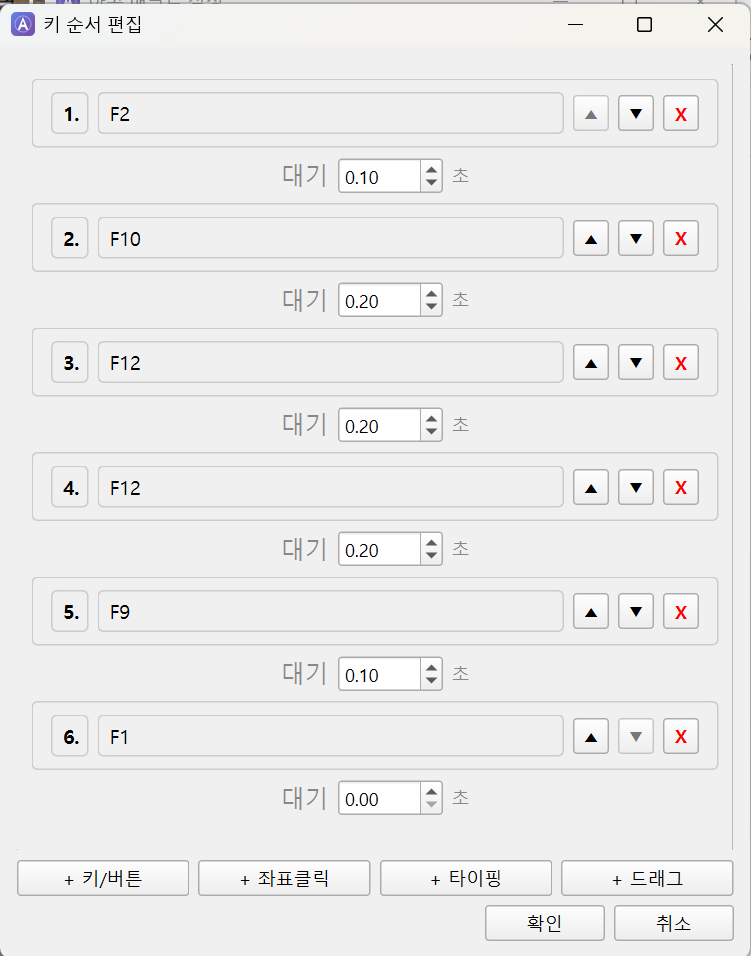
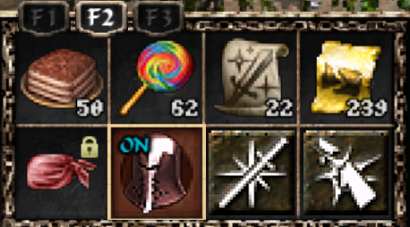
Down(↓) → F2→F10→F11→F9→F1.
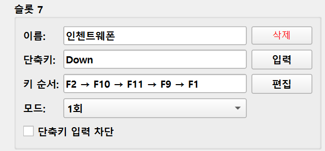
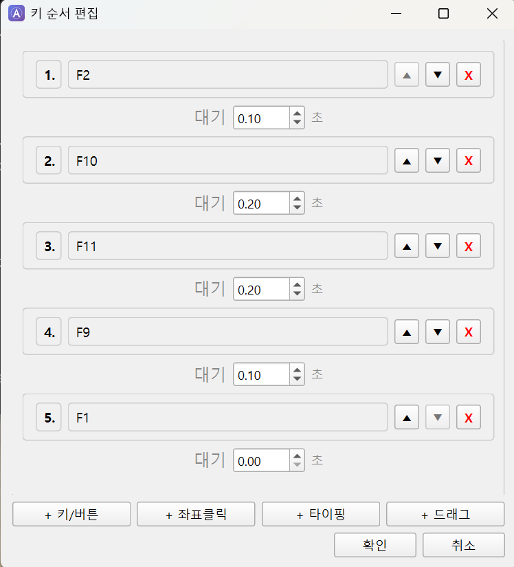
PageDown 마방 / PageUp 물방 — 각각 5단계 키 순서.
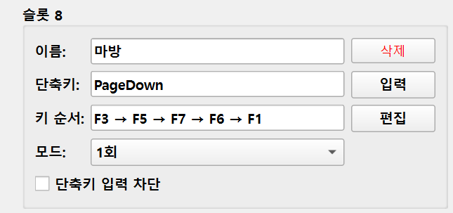
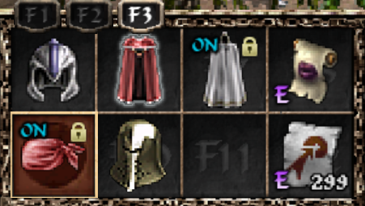
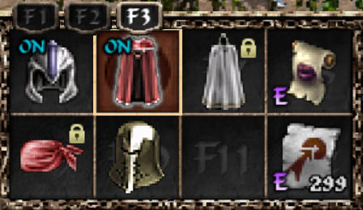